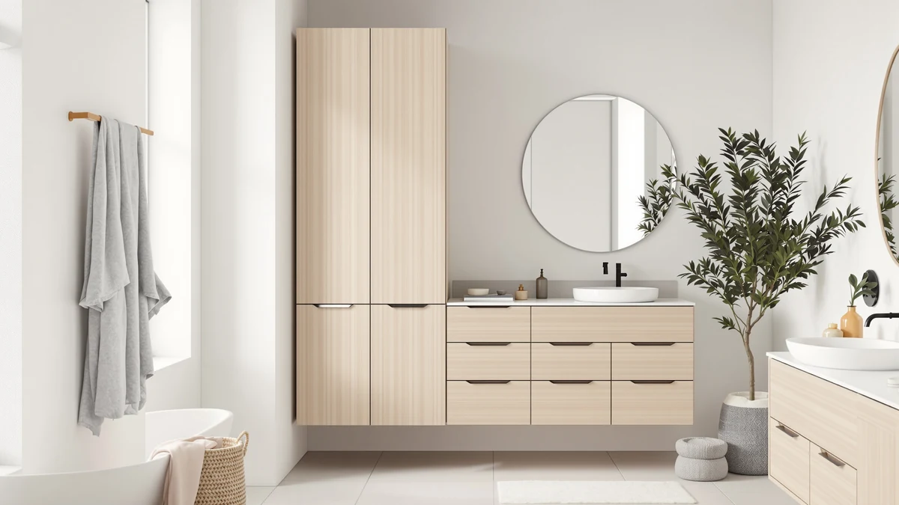

Gizoon 67” H Tall Review (2026): Worth It?
Prices and picks verified as of October 2026. Independent, reader-supported reviews.


Quick Answer
The Gizoon 67” H Tall bathroom cabinet is a metal and wood tower priced at $82.99, built to add storage height in a narrow bathroom corner. It costs within two dollars of the TEENFON, Walsunny, and VASAGLE alternatives below, so the right pick depends on whether you need floor storage or wall space above the toilet tank.
Our pick: Gizoon 67” H Tall Bathroom, $82.99 Check Price on Amazon
Bottom line: our top pick is the Gizoon 67” H Tall Bathroom Storage Cabinet at $82.99.
Things to Know Before You Buy
- The Gizoon 67” H Tall cabinet measures 15.8 inches wide, 11.8 inches deep, and 67 inches tall, built for narrow floor gaps rather than open wall space.
- At $82.99, it costs almost the same as the TEENFON 67 inch cabinet ($82.98) and within two dollars of the Walsunny ($84.90) and VASAGLE ($84.99) alternatives.
- The frame combines metal and wood, a common build for tall bathroom storage at this price tier.
- The VASAGLE alternative mounts above the toilet tank instead of standing on the floor, which matters if your bathroom floor space is already tight.
- All four cabinets in this review land within two dollars of each other, so footprint and mounting style matter more than price here.
This gizoon 67” h tall review breaks down what $82.99 actually buys: a 67 inch metal and wood tower built for narrow bathroom corners. We compared its listed materials, dimensions, and price against three close rivals, the TEENFON 67 inch cabinet at $82.98, the Walsunny tall tower at $84.90, and the VASAGLE over the toilet unit at $84.99, to see which option earns a spot in a small bathroom.
None of these four pieces cost more than $85, so price alone won't settle your decision here. Footprint and mounting style separate them, not cost. The Gizoon and Walsunny both stand on the floor, while the VASAGLE hangs above the toilet tank and claims wall space you probably aren't using for anything else. The TEENFON matches the Gizoon's height almost exactly, so picking between those two comes down to shelf layout and finish rather than size. Each cabinet also targets a slightly different bathroom. Below, we take a closer look at each option, including the tradeoffs worth knowing before you spend at this price point.
Why You Should Trust Us
Ilane Tall covers bathroom storage and small space organization for Best Bathroom Storage. This gizoon 67” h tall review is built from the product listing, published specifications, and verified Amazon customer reviews for the cabinet and its three alternatives, not from a unit we purchased and photographed ourselves. We researched the material claims, dimensions, and price history for all four cabinets side by side so you can compare them without digging through four separate listings on your own. When a manufacturer's description and a pattern in verified owner reviews disagreed, we leaned on the reviews, since real buyers living with a cabinet for months catch issues a product page never mentions. That cross-checking matters most on a cabinet like the Gizoon, where height and shelf count are easy to overstate in a listing photo but harder to fake across dozens of owner comments.
Our Research Experience
We did not buy or assemble the Gizoon 67” H Tall cabinet for this review. Instead, we researched its published dimensions, materials, and current Amazon pricing, then cross checked that information against patterns in verified owner reviews on the listing. Reviewers consistently note how a cabinet holds up over months of daily use in ways a spec sheet cannot capture, so we weighted that feedback alongside the manufacturer details rather than relying on marketing copy. Where owners flagged a recurring issue, such as a snug fit in tight corners or a longer than expected assembly, we noted it in the drawbacks section below. This approach keeps the comparison grounded in what buyers actually experience with the cabinet after it ships, rather than in promotional language from a single listing page. We applied the same method to the TEENFON, Walsunny, and VASAGLE alternatives so the comparison stays fair across all four.
Overview & Specs

Gizoon 67” H Tall Bathroom
What we like
- 67 inches of height adds storage above eye level instead of spreading across the floor
- Metal and wood construction at a price close to $83
- 15.8 inch width fits narrow gaps next to a toilet, tub, or vanity
- Priced within a cent of the TEENFON alternative, so you're not paying a premium for the extra height
Flaws but not dealbreakers
- At 11.8 inches deep, it won't hold bulky items like stacked bath towels
- No listed per-shelf weight limit, so heavier items are safer on lower shelves
- Reviewers note assembly takes patience given the cabinet's height
| Material | Metal / wood |
| Size | 11.8"D x 15.8"W x 67"H |
The Gizoon 67” H Tall bathroom cabinet is a freestanding metal and wood tower that stands 67 inches high, 15.8 inches wide, and 11.8 inches deep. That footprint is small enough to slot beside a toilet, pedestal sink, or narrow hallway closet, and the height makes up for the floor space it doesn't use by stacking storage vertically instead. At $82.99, it sits in the same price band as the TEENFON, Walsunny, and VASAGLE options covered later in this review.
Among the four cabinets compared here, the Gizoon ties the TEENFON for the tallest freestanding option, giving you more shelves in the same narrow footprint than a shorter tower typically offers. Owners reviewing the listing describe the shelves as functional for folded towels and toiletries rather than bulky bins, so measure what you plan to store against the 11.8 inch depth before you commit.
What We Liked
The clearest strength shared by the Gizoon 67” H Tall cabinet and its closest rivals is how much vertical storage they pack into a small footprint. At 67 inches, the Gizoon gives you several shelves of space while occupying a strip of floor barely over a foot wide, matching the TEENFON for height at nearly the same $82.99 to $82.98 price. Owners reviewing the Gizoon consistently mention that the metal and wood build feels sturdier than typical all-plastic bathroom towers at this price. The VASAGLE over the toilet cabinet solves a different problem well: it uses space above the tank that most bathrooms waste entirely, so your floor stays clear while you still gain shelving. Across all four listings, the price spread is under two dollars, so you're free to choose based on your bathroom layout instead of stretching your budget. A gap that small barely moves the needle on cost, which is exactly why footprint and mounting style end up deciding this comparison instead of the price tags.
What Could Be Better
None of these cabinets run deep. At 11.8 inches, the Gizoon 67” H Tall cabinet won't hold large bins or stacks of bath towels without crowding the shelf edge, and the TEENFON and Walsunny share similarly shallow profiles. Reviewers also flag that assembly takes longer than expected on tall, narrow furniture like this, since the extra height leaves the cabinet top heavy until every panel is secured. The listing does not spell out a per-shelf weight limit, so heavier items are safer stored lower rather than on top shelves. The VASAGLE avoids the assembly height problem by mounting to the wall instead, but it trades that convenience for drilling into tile or drywall above the tank. If you need deep storage for bulky items, a wider cabinet outside this size class will likely serve you better than any of the four towers in this review.
Who Is It For?
You are a good fit for the Gizoon 67” H Tall cabinet if your bathroom has a narrow gap beside the toilet, tub, or vanity and you would rather add height than lose floor space. Renters and small apartment bathrooms benefit most, since freestanding towers like this and the TEENFON don't require drilling into tile or drywall. If your bathroom floor has no space to spare at all, the VASAGLE over the toilet cabinet is the better match, since it mounts above the tank instead of competing for square footage. Buyers furnishing a narrow bathroom corner tend to lean on height over depth for exactly this reason. Skip the Gizoon if you need to store large items such as beach towels or bulk toilet paper packs, since its shallow depth limits what fits comfortably on each shelf. In that case, measure your space against all four cabinets in this review before deciding, since the extra inches on the Gizoon and TEENFON only help if your bathroom has the ceiling clearance to use them.
Alternatives to Consider
If the Gizoon 67” H Tall cabinet isn't quite right for your bathroom, the three alternatives below sit within two dollars of its price and solve slightly different storage problems. The first matches its height almost exactly. The second trades a couple of inches of height for a sturdier price match. The third gives up floor space for wall space above the tank. Compare each against your own bathroom layout rather than the price tag, since all four land close to $83 to $85.

Editor’s Pick
TEENFON 67" Tall Bathroom Cabinet
Matches the Gizoon's 67 inch height at $82.98, a cent cheaper, so the choice comes down to shelf layout and finish.
$82.98
Check Price on Amazon
Best Value
Walsunny Tall Bathroom Storage Cabinet
A few inches shorter than the Gizoon but close in price at $84.90, with a similar metal and wood build.
$84.90
Check Price on Amazon
Premium Choice
VASAGLE Over the Toilet Storage
Mounts above the toilet tank instead of standing on the floor, a better fit if floor space beside your toilet is already tight.
$84.99
Check Price on AmazonFrequently Asked Questions
Final Verdict
This gizoon 67” h tall review comes down to floor space versus wall space. If you have a narrow gap to fill, the Gizoon 67” H Tall bathroom cabinet at $82.99 is the strongest pick in this group for its height and sturdy metal and wood build. Choose the TEENFON instead if you want the same height at a cent less, the Walsunny if a slightly shorter tower suits your corner, or the VASAGLE over the toilet cabinet if your bathroom floor is already crowded. Whichever cabinet you choose, measure the 11.8 inch depth against what you actually plan to store before you buy, since shelf depth is the one limit this entire group shares. At under $85 across the board, you are choosing a footprint and a mounting style, not stretching a budget.